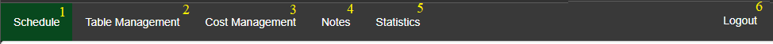

Nawigacja
Bedąc zalogowanym możemy z poziomu panelu nawigacji przenosić się do poszczególnych funckjonalności aplikacji:

Rys. 9 | Panel nawigacji
① Schedule – serce aplikacji, miejsce w którym mamy podgląd do harmonogramu z rezerwacjami i możemy dodawać, modyfikować i
usuwać wszystkie rezerwacje.
② Table Management – miejsce w którym możemy tworzyć, usuwać oraz modyfikować stoły do których wybierzemy z listy
stworzonych kosztów jeden jaki będzie naliczany za każdą godzinę rezerwacji stołu.
③ Cost Management – to miejsce odpowiada za zarządzanie kosztami czyli ceną jaka będzie pobierana za godzinę korzystania z danego stołu. Koszty te są następnie przypisywane do konkretnego stołu.
④ Notes – Miejsce na tworzenie notatek widocznych dla wszystkich użytkowników aplikacji. Zarządzanie salonem to nie tylko rezerwacje, czasem potrzeba przekazać informacje nie związane z rezerwowaniem stołów. To miejsce daje do tego dostęp.
⑤ Statistics – wyświetla dane statystyczne zgromadzone przez określony okres czasu takie jak ilość rezerwacji z podziałem na typ oraz obłożenie w danym dniu
⑥ Logout – wylogowuje użykownika.